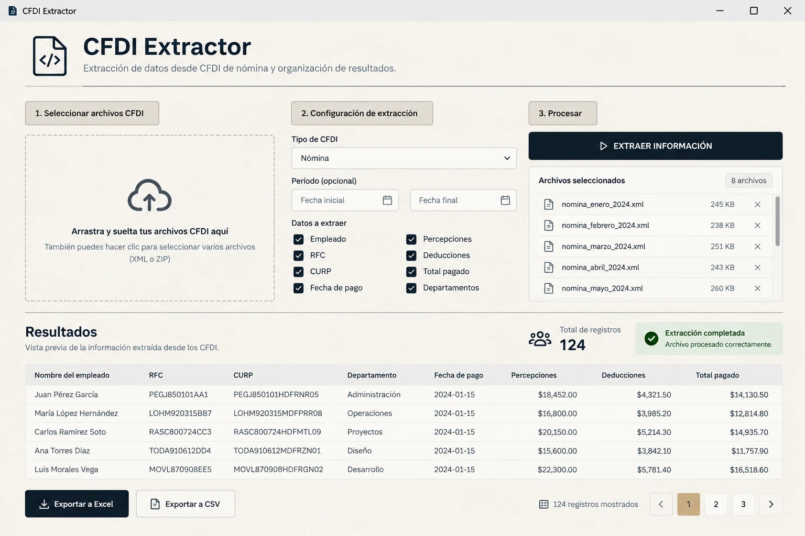

Web & Software Development
VIGO
Sitio web para el sector construcción, diseñado para escritorio y móvil.
01 / 04
AUREN / OUR WORK
Explora una selección de sitios, sistemas y herramientas desarrolladas por AUREN. Imágenes y demostraciones reales, sin páginas intermedias.
Web & Software Development
Sitio web para el sector construcción, diseñado para escritorio y móvil.
Business Systems
Inventarios, movimientos, indicadores y resultados financieros.
Desktop Utilities
Extracción y organización de información de CFDI de nómina en una herramienta de escritorio.

E-commerce & Shopify
Comparador visual interactivo para presentar cambios en imágenes de productos.